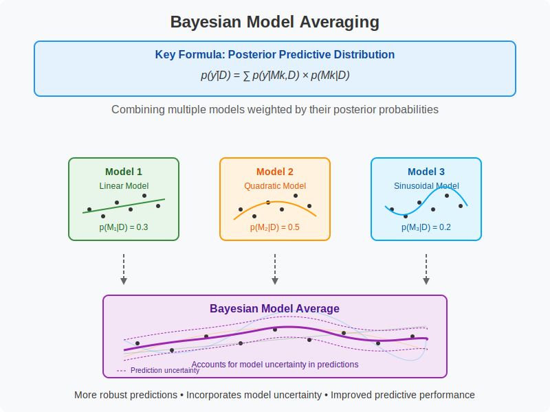

Bayesian Model Averaging¶
Bayesian Model Averaging improves predictions by combining multiple models weighted by their posterior probabilities, acknowledging uncertainty in model selection rather than relying on a single “best” model.
Graphical Summary¶

Key Formula¶
Let’s assume we have a set of models \(M_1, M_2, \dots, M_K\) and we want to predict a value for a new observation \(y^*\) based on the models. For each model \(M_k\), we calculate a prediction, denoted as \(\hat{y}^*_k\).
The model-averaged prediction is typically given by the weighted sum of the predictions from each model:
Where:
\(w_k\) is the weight associated with model \(M_k\), which reflects how likely or good the model is at describing the data.
\(\hat{y}^*_k\) is the prediction made by model \(M_k\) for the new data point.
Technical Details¶
Weights in Model Averaging¶
The weights \(w_k\) can be assigned based on various criteria:
Bayesian Model Averaging (BMA): In the Bayesian framework, the weights correspond to the posterior model probabilities, i.e., the probability of each model given the data:
\[ w_k = P(M_k | D) \]Where \(P(M_k | D)\) is the posterior probability of model \(M_k\) given the observed data \(D\).
[Do we want to include AIC and BIC???]
Akaike Information Criterion (AIC) or Bayesian Information Criterion (BIC): In a frequentist context, the weights are often computed based on the relative likelihood of each model, using information criteria like AIC or BIC. The models with lower AIC/BIC values are considered to be more likely and receive higher weights.
Where \(\Delta \text{AIC}_k = \text{AIC}_k - \min(\text{AIC})\), and \(\text{AIC}_k\) is the AIC of model \(k\).
Why Model Averaging Works¶
BMA accounts for the uncertainty involved in selecting the model, preserving the uncertainty about models.
Reduced Risk of Overfitting: By averaging over multiple models, we avoid overfitting to any one model. Even if one model fits the training data well but fails to generalize, other models can provide complementary information, reducing the overall risk of overfitting.
Improved Accuracy: If models make different types of errors, combining their predictions can reduce the variance and bias, leading to more accurate predictions.
Incorporating Model Uncertainty: In cases where model uncertainty is high, model averaging incorporates this uncertainty by using multiple models and averaging their predictions, rather than relying on a single model.
Advantages of BMA
Accounts for model uncertainty, leading to more robust inference.
Prevents overconfidence in a single model when multiple models have similar posterior probabilities.
Helps mitigate overfitting, especially with limited data.
Example¶
We will introduce the concept of Bayesian Model Averaging (BMA) by considering a situation with a single SNP and two traits: height and weight. We define four models, where the SNP may or may not affect height and/or weight:
Here we are trying to average the estimated effect sizes of the SNP on both height and weight across multiple possible models where the SNP may:
Have no effect on either trait (
Model 1).Affect height only (
Model 2).Affect weight only (
Model 3).Affect both height and weight (
Model 4), capturing pleiotropy.
Specifically, it’s calculating:
A weighted average of the SNP’s effect on height across four different models (no effect, height only, weight only, both traits)
A weighted average of the SNP’s effect on weight across these same four models
The weights used for this averaging are the posterior probabilities of each model - how likely each model is given the observed data. This means that models with higher posterior probabilities contribute more to the final averaged estimate.
We’ll first randomly assign priors to these models. For simplicity, we assume equal priors for all models in the beginning.
rm(list=ls())
# Set up model priors (randomly assign)
model_priors <- c(0.25, 0.25, 0.25, 0.25) # Equal priors for simplicity
Observe the data¶
Assume we have summary statistics for the SNP with respect to both height and weight. We can simulate some data for the effect sizes (betas) and standard errors (SE).
# Simulated summary statistics (effect sizes and standard errors)
observed_beta_height <- 0.2 # Observed effect size for height
observed_se_height <- 0.05 # Standard error for height
observed_beta_weight <- 0.1 # Observed effect size for weight
observed_se_weight <- 0.05 # Standard error for weight
Calculate Likelihoods¶
Now we calculate the likelihood of observing the data under each model. In the context of summary statistics, the likelihood for a model is typically modeled as a normal distribution where the mean is the effect size and the variance is the standard error.
# Likelihood function based on normal distribution
likelihood <- function(observed_beta, observed_se, model_beta) {
# Likelihood is the probability of observing observed_beta given model_beta and observed_se
# We use the normal density function (dnorm) to calculate this
return(dnorm(observed_beta, mean=model_beta, sd=observed_se))
}
# Define likelihood for each model
likelihoods <- c(
# Model 1: No effect (beta = 0 for both height and weight)
likelihood(observed_beta_height, observed_se_height, 0) * likelihood(observed_beta_weight, observed_se_weight, 0), # SNP has no effect
# Model 2: SNP affects height (beta for height = observed, beta for weight = 0)
likelihood(observed_beta_height, observed_se_height, observed_beta_height) * likelihood(observed_beta_weight, observed_se_weight, 0), # SNP affects height only
# Model 3: SNP affects weight (beta for weight = observed, beta for height = 0)
likelihood(observed_beta_height, observed_se_height, 0) * likelihood(observed_beta_weight, observed_se_weight, observed_beta_weight), # SNP affects weight only
# Model 4: SNP affects both height and weight (pleiotropy)
likelihood(observed_beta_height, observed_se_height, observed_beta_height) * likelihood(observed_beta_weight, observed_se_weight, observed_beta_weight) # SNP affects both traits
)
Calculate Bayes Factors and Posterior Probabilities¶
The Bayes factor for each model is the ratio of the likelihood under that model to the likelihood under a null model (Model 1). We calculate the posterior probabilities for each model using Bayes’ theorem.
# Calculate Bayes factors (relative likelihood to Model 1)
bayes_factors <- likelihoods / likelihoods[1]
# Posterior probabilities (using priors and likelihoods)
posterior_probabilities <- (likelihoods * model_priors) / sum(likelihoods * model_priors)
posterior_probabilities
- 3.99747154521025e-05
- 0.119162947306665
- 0.000295375415014376
- 0.880501702562868
Bayesian Model Averaging (BMA)¶
We perform Bayesian model averaging by computing a weighted average of the effects across all models, where the weights are the posterior probabilities.
# Now, we can calculate the Bayesian Model Averaging (BMA) estimate
# For each model, we calculate the weighted average of the effect sizes (betas)
# Effect sizes (betas) for each model:
betas_height <- c(0, observed_beta_height, 0, observed_beta_height) # Height betas for each model
betas_weight <- c(0, 0, observed_beta_weight, observed_beta_weight) # Weight betas for each model
# Compute BMA estimates for height and weight
bma_height <- sum(posterior_probabilities * betas_height)
bma_weight <- sum(posterior_probabilities * betas_weight)
# Print the BMA estimates
cat("Bayesian Model Averaging (BMA) Estimates:\n")
cat("BMA Estimate for Height Effect: ", bma_height, "\n")
cat("BMA Estimate for Weight Effect: ", bma_weight, "\n")
Bayesian Model Averaging (BMA) Estimates:
BMA Estimate for Height Effect: 0.1999329
BMA Estimate for Weight Effect: 0.08807971